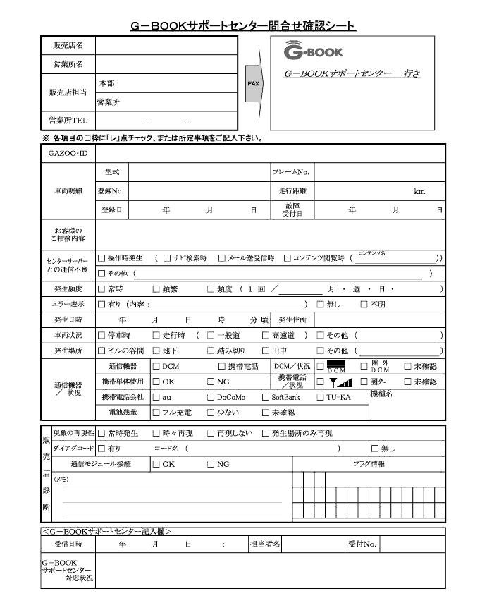

Check Diagnostic Trouble Code (Service Check) (see )
)
Flag Information (see)
Fill in G-BOOK Support Center Inquiry Check Sheet

Fill in each item and send it by FAX to the G-BOOK Support Center.
Item Name How to Fill In Remarks Dealer Name Enter the dealer name of the person requesting the check Customer Information Branch Name Enter the branch name of the person requesting the check Customer Information Dealer Person in Charge Enter the name of the person requesting the check Customer Information Branch TEL Enter the telephone number of the branch of the person requesting the check Customer Information GAZOO/ID Enter the customer's GAZOO ID Information on Requested Vehicle Vehicle Details - Model Code Enter the model code of the applicable vehicle Information on Requested Vehicle Vehicle Details - Frame No. Enter the frame number of the applicable vehicle Information on Requested Vehicle Vehicle Details - Registration No. Enter the registration number of the applicable vehicle Information on Requested Vehicle Vehicle Details - Mileage Enter the mileage of the applicable vehicle Information on Requested Vehicle Vehicle Details - Registration Date Enter the registration date of the applicable vehicle Information on Requested Vehicle Vehicle Details - Malfunction Reception Date Enter the date the applicable vehicle was brought to the workshop Information on Requested Vehicle Communication Malfunction with Center Server Check the box if a communication malfunction occurred Malfunction Information from Dealer Frequency of Occurrence Enter the frequency of occurrence of the communication malfunction Malfunction Information from Dealer Error Display Enter whether an error was displayed during the communication malfunction and the content of the error display Malfunction Information from Dealer Date and Time of Occurrence Enter the date and time when the communication malfunction occurred Malfunction Information from Dealer Address of Occurrence Enter the address where the communication malfunction occurred Malfunction Information from Dealer Vehicle Condition Check the box for the vehicle condition when the communication malfunction occurred Malfunction Information from Dealer Location of Occurrence Check the box for the location where the communication malfunction occurred Malfunction Information from Dealer Communication Device/Condition - Communication Device Check the box for the installed device being used (cellular phone)) Malfunction Information from Dealer Communication Device/Condition - DCM/Condition - - Communication Device/Condition - Cellular Phone Use by Itself Check the box for whether the cellular phone can be used by itself Malfunction Information from Dealer Communication Device/Condition - Cellular Phone/Condition Check the box for the in-range/out-of-range display of the cellular phone when the communication malfunction occurred Malfunction Information from Dealer Communication Device/Condition - Cellular Phone Carrier Check the box for the cellular phone carrier Malfunction Information from Dealer Communication Device/Condition - Battery Level Check the box for the battery level of the cellular phone Malfunction Information from Dealer Communication Device/Condition - Model Name Enter the model name of the cellular phone Malfunction Information from Dealer Dealer Diagnosis - Reproducibility of Symptom Check the box for the reproducibility of the symptom Malfunction Information from Dealer Dealer Diagnosis - DTC Enter whether DTCs were output and the DTC content (see )Malfunction Information from Dealer Dealer Diagnosis - Communication Module Connection - - Dealer Diagnosis - Flag Information Enter G Terminal Association Information - Flag Information (see )Malfunction Information from Dealer - □ HINT □
- When data communication is performed using the customer's own cellular phone, the communication status cannot be checked.